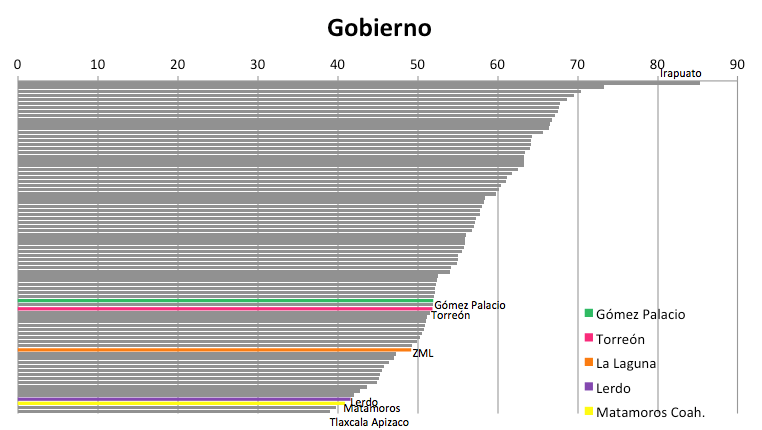
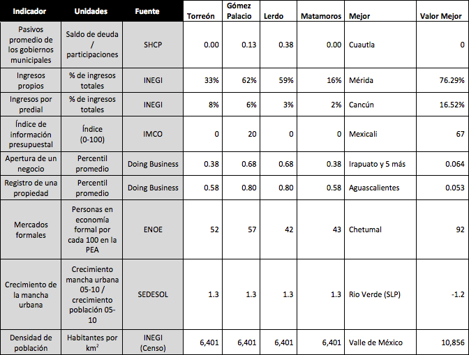

Después del Sistema de Derecho, la eficiencia de los gobiernos es el subíndice peor evaluado para la metrópoli ubicándonos en el lugar 63 de 77. Esto resulta aún más significativo si consideramos que ambos subíndice eran fortalezas de la región en la primera edición del ICU en 2007. Lerdo y Matamoros de forma aislada se encuentran muy cercanos a la valoración de Tlaxcala, que es la ciudad peor evaluada del subíndice, mientras Torreón y Gómez Palacio ocupan posiciones superiores pero aun por debajo de la media.
Los primeros indicadores están relacionados a las finanzas públicas municipales, como es la proporción de deuda pública sobre el total de participaciones. Para el año de referencia (2010) la ZML presento un .08 de deuda, sin embargo Matamoros y Torreón mostraban deuda cero, mientras Gómez Palacio de un .13 y Lerdo de un .38, situándose en la parte baja del ranking pero aun muy lejos de 1.4 de endeudamiento sobre participaciones que presentan Tijuana o Cancún.
La proporción de ingresos propios de los municipios sobre su presupuesto de ingresos, muestra la solvencia e independencia financiera de un municipio. La ZML registró un 41 % de ingresos propios, sin embargo existen amplias diferencias entre municipios ya que mientras los dos municipios del estado de Durango muestran un alto porcentaje que ronda el 60 %, Torreón registró 33 % y Matamoros 16 % de ingresos propios. En cambio en el porcentaje de ingresos por predial Torreón registra 8 % lo cual se encuentra por encima de la media de ciudades, mientras Gómez Palacio, Lerdo y Matamoros presentan 6%, 3% y 2 % respectivamente, situando a la ZML con 6.8 %. El IMCO a partir de 2009 publica anualmente un Índice de Información Presupuestal, que evalúa la transparencia financiera de los municipios, y a su vez forma parte de los indicadores del subíndice de gobiernos eficaces. En 2010 este indicador califico con 5 sobre 100 a la ZML, siendo Gómez Palacio el único que obtuvo valoración superior a cero con 20 de 100.
La eficiencia gubernamental también es medida por la facilidad de sus trámites por lo cual considera dos indicadores más generados por Doing Business del Banco Mundial: apertura de un negocio y registro de una propiedad. Dichos indicadores se toman a nivel estatal por lo cual para la ZML se considera el promedio entra la calificación de Durango y Coahuila. Estos indicadores muestran una debilidad a nivel metropolitano y de los estados involucrados, ya que en ambos tanto la ZML como los cuatro municipios aparecen en las peores calificaciones, que tiene que ver con la mejora regulatoria y la duración de trámites que interfieren directamente en el dinamismo económico.
Otros indicadores de eficiencia de los gobiernos tienen que ver con la posibilidad de regular mercados y el crecimiento de la propia ciudad. El porcentaje de PEA en los mercados formales, representan a su vez la capacidad gubernamental de controlar la informalidad, en este sentido la ZML se encuentra a la par de la media nacional (53%) al igual que Torreón, lejos de niveles óptimos. Gómez Palacio registra 57 % de PEA en la economía formal, siendo el mejor valor de la Zona, sin embargo Lerdo y Matamoros tienen un rezago al registrar 42% y 43% respectivamente.
Se evalúa también a los gobiernos por su control del crecimiento urbano, ya que la compactación de las ciudades se considera un importante factor de competitividad. La información al respecto es a nivel metropolitano y muestra que entre 2005 y 2010 la mancha urbana de la ZML creció 1.3 veces más que su población, lo cual se relaciona con el último indicador de este subíndice que es la densidad poblacional, donde nos encontramos en la media de ciudades con 6,401 habitantes por kilómetro cuadrado.